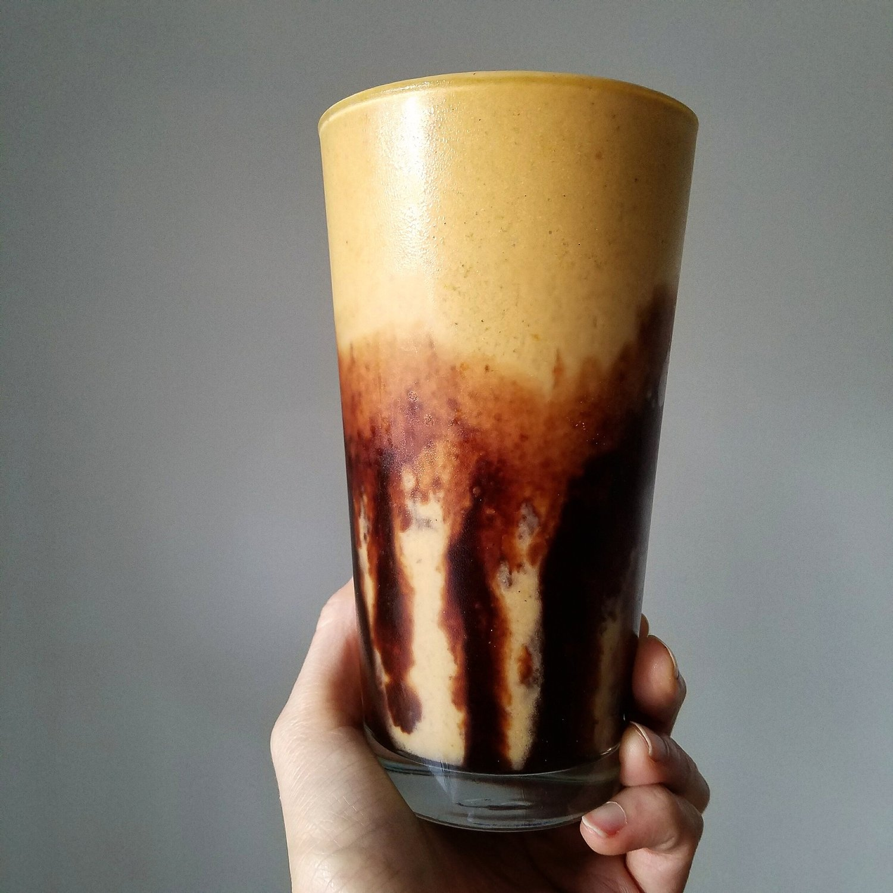

Pumpkin Spice Protein Smoothie (vegan, gluten free)

Just doin' pumpkin things with this pumpkin spice protein smoothie. I added a fancy chocolate swirl to complete the flavors. This recipe is so simple to make and perfect for a healthy vegan pick-me-up.
This protein smoothie came out surprisingly thick and frothy!! I really like the thickness; it filled me up just right. The pumpkin mood has hit me hard. There was a potluck at work last week that got me so into everything pumpkin. I brought a pumpkin chickpea lentil curry. Another lady brought a pumpkin coconut rice dish. And everything overall was so "fall" and festive. There were so many vegan-friendly dishes! I really did not expect many options. A lot of people didn't purposefully make it vegan, but after speaking with them about the ingredients it sure was vegan. It was so nice to see! And 2 of the 3 "winning" dishes were vegan! Wooooo. My favorite was this indian dish called bhel, and it was voted in the top 3. I muuuust learn how to make it!! The flavors were so complex - sweet, spicy, crunchy, soft. Just great.
If you want a festive fall treat as well, try out this eeeeasy pumpkin spice protein smoothie! And like...even if it's not fall. Because pumpkin forever.
Pumpkin Spice Protein Smoothie
Serves: 1
-
1 frozen banana
-
1/2 cup pumpkin puree
-
1 scoop vanilla vegan protein powder
-
1 cup almond milk
-
1/2 tsp pumpkin pie spice
-
4-5 ice cubes
Just blend everything in a blender! It helps to first blend the banana and pumpkin puree. Then add the protein powder, almond milk, and pumpkin pie spice and blend again. Lastly add the ice cubes and blend.